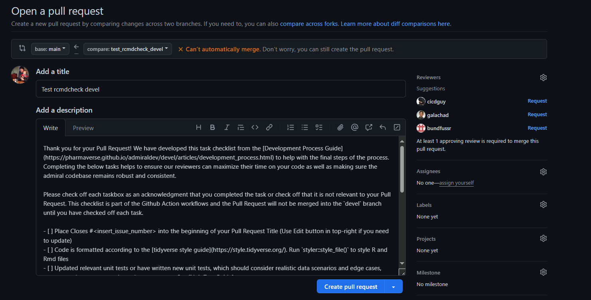
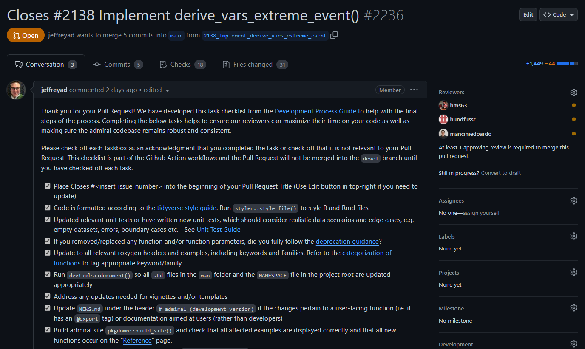
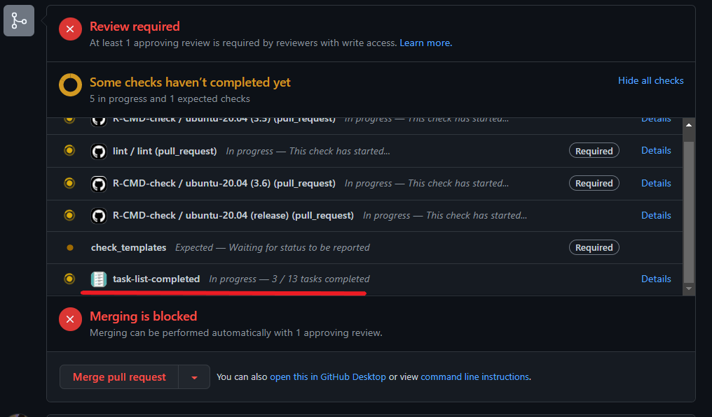

Introduction
This document is intended to be guidance for creators and reviewers of pull requests (PRs) in the admiral package family. PR authors will benefit from shorter review times by closely following the guidance provided here.
A pull request into the main branch signifies that an
issue has been “addressed”. This issue might be a bug, a feature request
or a documentation update. Once a Pull Request is merged into
main branch, then the issue(s) can be closed.
Closely following the below guidance will ensure that our all our
“addressed” issues auto-close once we merge main.
Review Criteria
For a pull request to be merged into main it needs to
pass the automated CI checks that will appear at the bottom of the Pull
Request. In addition, the PR creator and reviewer should make sure
that
the Programming Strategy and Development Process are followed
the function is ADaM IG compliant
the function does what is intended for (as described in the header and corresponding issue)
the function header properly explains the intention of the function, the expected inputs (incl. permitted values of parameters) and the output produced; after reading the documentation the reader should be able to predict the output of the function without having to read the source code
the function has an accompanying set of unit tests; for derivations these unit test should have a code coverage of at least 90%; the whole package should have a coverage of >= 80%
the implemented derivation is in the scope of admiral, e.g. does not expect company specific input or hard-code company-specific rules
meaningful error or warning messages are issued if the input is invalid
documentation is created/updated by running
devtools::document()functions which are supposed to be exported are listed in the
NAMESPACEfile; this requires an@exporttag in the function headerexamples print relevant source variables and newly created variables and/or records in their output
the
NEWS.mdfile is updated with an entry that explains the new features or changes if the change is user-specific or warrants a mention as a development milestoneall files affected by the implemented changes, e.g. vignettes and templates, are updated
Codeowners and PR Guidance
As the creator of a PR, the assignment of a reviewer can be unclear. For most PRs, feel free to select a few members of the core development team. These individuals scan each repository on a regular basis as well and may provide his/her review even if not originally included as a selected reviewer.
Sometimes, the development of a function or a vignette falls under a
specific-topic, e.g. labs or PK/PD. Please ensure you include an
appropriate reviewer if you are modifying files that rely on
domain-expertise. We try to maintain an active list for domain-specific
topics that will automatically tag an appropriate reviewer using our
CODEOWNERS file, located in the .github
folder. If you are interested in being a codeowner, reach out to the
development team.
So much Red Tape!
The admiral development team is aware and sympathetic
to the great many checks, processes and documents needed to work through
in order to do a compliant Pull Request. The
task-list-completed GitHub workflow was created to help
reduce this burden on contributors by providing a standardized checklist
that compiles information from the Pull Request Review Guidance, Programming Strategy and Development
Process vignettes.
The next three sections give a high-level overview of what a
contributor faces in opening a PR, and how a contributor interacts with
the task-list-completed workflow in their PR.
Open a Pull Request
When a contributor opens a PR a lengthy standard text will be
inserted into the comment section. Please do not alter any of the
automated text. You will need to manually add
Closes #<insert_issue_number> into the title of the
Pull Request. You can use the Edit button in the top right if you forget
this step at the start of your Pull Request. Besides that you are free
to add in additional textual information, screenshots, etc. at the
bottom of the automated text if needed to clarify or contribute to the
discussion around your PR.

Create a Pull Request
After you click the green Create pull request button the
automated text that was inserted will be turned into a checklist in your
Pull Request. Each check box has been drawn from the previously
mentioned vignettes and presented in the recommended sequence. These
check boxes are meant to be a helpful aid in ensuring that you have
created a compliant Pull Request.

Complete the Pull Request checklist
The check boxes are linked to the task-list-completed
workflow. You need to check off each box in acknowledgment that you have
done you due diligence in creating a compliant Pull Request. GitHub will
refresh the Pull Request and trigger task-list-completed
workflow that you have completed the task. The PR can not be merged into
main until the contributor has checked off each of the
check box items.

Please don’t hesitate to reach out to the admiral team on Slack or through the GitHub Issues tracker if you think this checklist needs to be amended or further clarity is needed on a check box item.
Note for Reviewers: We recommend the use of Squash and Merge when merging in a Pull Request. This will create a clean commit history.
GitHub Actions/CI Workflows
The task-list-completed workflow is one of the several
workflows/actions used within admiral. These workflows
live in the .github/workflows folder and it is important to
understand their use and how to remedy if the workflow fails. Workflows
defined here are responsible for assuring high package quality standards
without compromising performance, security, or reproducibility.